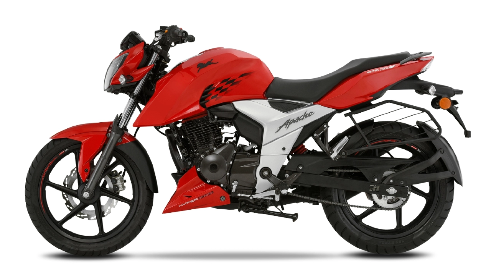

<!-- <div fxLayout="column" fxLayoutAlign="center center" fxLayoutGap="50px"> -->
    <!-- <label class="custom-file-upload">
        <input type="file" (change)="fileChangeEvent($event)"/>
        Select an Image
    </label> -->
    <!-- <button mat-button (click)="downloadImage()">download</button>

    

    <div>
        <canvas id="canvas2" #canvas2 width="400px" height="400px"></canvas>
    </div>

    <button *ngIf="showOptions" class="menu"mat-button [matMenuTriggerFor]="menu">Options</button>
        <mat-menu  #menu="matMenu">
            <button mat-menu-item (click)=updateImage(-255,-255,-255)>Invert Color</button>
            <button mat-menu-item>Item 2</button>
        </mat-menu>
</div> -->

<div fxLayout="row" fxLayoutAlign="space-between center" fxLayoutGap="50px">
    <!-- <div fxLayout="row"> -->
        <div></div>
        <div></div>
        <div></div>
        <div></div>

        
        <!-- <mat-menu  #menu="matMenu">
            <button mat-menu-item (click)=updateImage(-255,-255,-255)>Invert Color</button>
            <button mat-menu-item (click)="cropImage(.1)">Crop By 10%</button>
            <button mat-menu-item (click)="cropImage(.2)">Crop By 20%</button>

        </mat-menu> -->

    <!-- </div> -->
    <!-- <div class="container">
        <canvas id="canvas" #canvas width="500px" height="500px"></canvas>
        <mat-icon *ngIf="showOptions" class="download" (click)="downloadImage()">arrow_downward</mat-icon> 
        <mat-icon *ngIf="showOptions" class="menu" mat-button [matMenuTriggerFor]="menu">more_vert</mat-icon>

    </div> -->
</div>


